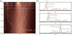
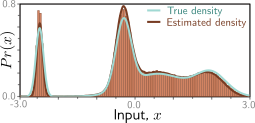

import numpy as np
import matplotlib.pyplot as plt
from matplotlib.colors import ListedColormap
from operator import itemgetter
from scipy import stats
from IPython.display import display, clear_output
#Create pretty colormap as in book
my_colormap_vals_hex =('2a0902', '2b0a03', '2c0b04', '2d0c05', '2e0c06', '2f0d07', '300d08', '310e09', '320f0a', '330f0b', '34100b', '35110c', '36110d', '37120e', '38120f', '39130f', '3a1410', '3b1411', '3c1511', '3d1612', '3e1613', '3f1713', '401714', '411814', '421915', '431915', '451a16', '461b16', '471b17', '481c17', '491d18', '4a1d18', '4b1e19', '4c1f19', '4d1f1a', '4e201b', '50211b', '51211c', '52221c', '53231d', '54231d', '55241e', '56251e', '57261f', '58261f', '592720', '5b2821', '5c2821', '5d2922', '5e2a22', '5f2b23', '602b23', '612c24', '622d25', '632e25', '652e26', '662f26', '673027', '683027', '693128', '6a3229', '6b3329', '6c342a', '6d342a', '6f352b', '70362c', '71372c', '72372d', '73382e', '74392e', '753a2f', '763a2f', '773b30', '783c31', '7a3d31', '7b3e32', '7c3e33', '7d3f33', '7e4034', '7f4134', '804235', '814236', '824336', '834437', '854538', '864638', '874739', '88473a', '89483a', '8a493b', '8b4a3c', '8c4b3c', '8d4c3d', '8e4c3e', '8f4d3f', '904e3f', '924f40', '935041', '945141', '955242', '965343', '975343', '985444', '995545', '9a5646', '9b5746', '9c5847', '9d5948', '9e5a49', '9f5a49', 'a05b4a', 'a15c4b', 'a35d4b', 'a45e4c', 'a55f4d', 'a6604e', 'a7614e', 'a8624f', 'a96350', 'aa6451', 'ab6552', 'ac6552', 'ad6653', 'ae6754', 'af6855', 'b06955', 'b16a56', 'b26b57', 'b36c58', 'b46d59', 'b56e59', 'b66f5a', 'b7705b', 'b8715c', 'b9725d', 'ba735d', 'bb745e', 'bc755f', 'bd7660', 'be7761', 'bf7862', 'c07962', 'c17a63', 'c27b64', 'c27c65', 'c37d66', 'c47e67', 'c57f68', 'c68068', 'c78169', 'c8826a', 'c9836b', 'ca846c', 'cb856d', 'cc866e', 'cd876f', 'ce886f', 'ce8970', 'cf8a71', 'd08b72', 'd18c73', 'd28d74', 'd38e75', 'd48f76', 'd59077', 'd59178', 'd69279', 'd7937a', 'd8957b', 'd9967b', 'da977c', 'da987d', 'db997e', 'dc9a7f', 'dd9b80', 'de9c81', 'de9d82', 'df9e83', 'e09f84', 'e1a185', 'e2a286', 'e2a387', 'e3a488', 'e4a589', 'e5a68a', 'e5a78b', 'e6a88c', 'e7aa8d', 'e7ab8e', 'e8ac8f', 'e9ad90', 'eaae91', 'eaaf92', 'ebb093', 'ecb295', 'ecb396', 'edb497', 'eeb598', 'eeb699', 'efb79a', 'efb99b', 'f0ba9c', 'f1bb9d', 'f1bc9e', 'f2bd9f', 'f2bfa1', 'f3c0a2', 'f3c1a3', 'f4c2a4', 'f5c3a5', 'f5c5a6', 'f6c6a7', 'f6c7a8', 'f7c8aa', 'f7c9ab', 'f8cbac', 'f8ccad', 'f8cdae', 'f9ceb0', 'f9d0b1', 'fad1b2', 'fad2b3', 'fbd3b4', 'fbd5b6', 'fbd6b7', 'fcd7b8', 'fcd8b9', 'fcdaba', 'fddbbc', 'fddcbd', 'fddebe', 'fddfbf', 'fee0c1', 'fee1c2', 'fee3c3', 'fee4c5', 'ffe5c6', 'ffe7c7', 'ffe8c9', 'ffe9ca', 'ffebcb', 'ffeccd', 'ffedce', 'ffefcf', 'fff0d1', 'fff2d2', 'fff3d3', 'fff4d5', 'fff6d6', 'fff7d8', 'fff8d9', 'fffada', 'fffbdc', 'fffcdd', 'fffedf', 'ffffe0')
my_colormap_vals_dec = np.array([int(element,base=16) for element in my_colormap_vals_hex])
r = np.floor(my_colormap_vals_dec/(256*256))
g = np.floor((my_colormap_vals_dec - r *256 *256)/256)
b = np.floor(my_colormap_vals_dec - r * 256 *256 - g * 256)
my_colormap_vals = np.vstack((r,g,b)).transpose()/255.0
my_colormap = ListedColormap(my_colormap_vals)
# Probability distribution for normal
def norm_pdf(x, mu, sigma):
return np.exp(-0.5 * (x-mu) * (x-mu) / (sigma * sigma)) / np.sqrt(2*np.pi*sigma*sigma)
# True distribution is a mixture of four Gaussians
class TrueDataDistribution:
# Constructor initializes parameters
def __init__(self):
self.mu = [1.5, -0.216, 0.45, -1.875]
self.sigma = [0.3, 0.15, 0.525, 0.075]
self.w = [0.2, 0.3, 0.35, 0.15]
# Return PDF
def pdf(self, x):
return(self.w[0] *norm_pdf(x,self.mu[0],self.sigma[0]) + self.w[1] *norm_pdf(x,self.mu[1],self.sigma[1]) + self.w[2] *norm_pdf(x,self.mu[2],self.sigma[2]) + self.w[3] *norm_pdf(x,self.mu[3],self.sigma[3]))
# Draw samples
def sample(self, n):
hidden = np.random.choice(4, n, p=self.w)
epsilon = np.random.normal(size=(n))
mu_list = list(itemgetter(*hidden)(self.mu))
sigma_list = list(itemgetter(*hidden)(self.sigma))
return mu_list + sigma_list * epsilon
# Define ground truth probability distribution that we will model
true_dist = TrueDataDistribution()
# Let's visualize this
x_vals = np.arange(-3,3,0.01)
pr_x_true = true_dist.pdf(x_vals)
fig,ax = plt.subplots()
fig.set_size_inches(8,2.5)
ax.plot(x_vals, pr_x_true, 'r-')
ax.set_xlabel("
")
ax.set_ylabel("
")
ax.set_ylim(0,1.0)
ax.set_xlim(-3,3)
plt.show()
Decoder model (reverse process)
\[\begin{eqnarray}\label{eq:diffusion_decoder_prob} Pr(\mathbf{z}_{T})&=& \mbox{Norm}_{\mathbf{z}_{T}}[\mathbf{0},\mathbf{I}]\nonumber \\ Pr(\mathbf{z}_{t-1}|\mathbf{z}_{t},\boldsymbol\phi_{t}) &=& \mbox{Norm}_{\mathbf{z}_{t-1}}\Bigl[\mbox{\bf f}_{t}[\mathbf{z}_{t},\boldsymbol\phi_{t}],\sigma_{t}^{2}\mathbf{I}\Bigr]\nonumber\\ Pr(\mathbf{x}|\mathbf{z}_{1},\boldsymbol\phi_{1}) & =&\mbox{Norm}_{\mathbf{x}}\Bigl[\mbox{\bf f}_{1}[\mathbf{z}_{1},\boldsymbol\phi_{1}],\sigma^{2}_{1}\mathbf{I}\Bigr], \end{eqnarray}\]
Training
\[\begin{eqnarray}\label{eq:diffusion_joint_reverse} Pr(\mathbf{x},\mathbf{z}_{1\ldots T}|\boldsymbol\phi_{1\ldots T}) = Pr(\mathbf{x}|\mathbf{z}_{1},\boldsymbol\phi_1)\prod_{t=2}^{T}Pr(\mathbf{z}_{t-1}|\mathbf{z}_{t},\boldsymbol\phi_t)\cdot Pr(\mathbf{z}_{T}). \end{eqnarray}\]
\[\begin{eqnarray}\label{eq:diffusion_marginalize} Pr(\mathbf{x}|\boldsymbol\phi_{1\ldots T}) = \int Pr(\mathbf{x},\mathbf{z}_{1\ldots T}|\boldsymbol\phi_{1\ldots T}) d\mathbf{z}_{1\ldots T}. \end{eqnarray}\]
\[\begin{eqnarray} \hat{\boldsymbol\phi}_{1\ldots T} = \mathop{\rm argmax}_{\boldsymbol\phi_{1\ldots T}} \left[\sum_{i=1}^{I}\log\Bigl[Pr(\mathbf{x}_i|\boldsymbol\phi_{1\ldots T})\Bigr]\right]. \end{eqnarray}\]
Evidence lower bound (ELBO)
\[\begin{eqnarray} \log\left[Pr(\mathbf{x}|\boldsymbol\phi_{1\ldots T})\right] &=& \log\left[\int Pr(\mathbf{x},\mathbf{z}_{1\ldots T}|\boldsymbol\phi_{1\ldots T}) d\mathbf{z}_{1\ldots T}\right]\nonumber\\ &=& \log\left[\int q(\mathbf{z}_{1\ldots T}|\mathbf{x}) \frac{Pr(\mathbf{x},\mathbf{z}_{1\ldots T}|\boldsymbol\phi_{1\ldots T}) }{q(\mathbf{z}_{1\ldots T}|\mathbf{x})}d\mathbf{z}_{1\ldots T}\right]\nonumber \\ &\geq& \int q(\mathbf{z}_{1\ldots T}|\mathbf{x})\log\left[ \frac{Pr(\mathbf{x},\mathbf{z}_{1\ldots T}|\boldsymbol\phi_{1\ldots T}) }{q(\mathbf{z}_{1\ldots T}|\mathbf{x})}\right]d\mathbf{z}_{1\ldots T}. \end{eqnarray}\]
\[\begin{eqnarray}\label{eq:diffusion_loss_1} \mbox{ELBO}\bigl[\boldsymbol\phi_{1\ldots T}\bigr] = \int q(\mathbf{z}_{1\ldots T}|\mathbf{x})\log\left[ \frac{Pr(\mathbf{x},\mathbf{z}_{1\ldots T}|\boldsymbol\phi_{1\ldots T}) }{q(\mathbf{z}_{1\dots T}|\mathbf{x})}\right]d\mathbf{z}_{1\ldots T}. \end{eqnarray}\]
Simplifying the ELBO
\[\begin{eqnarray}\label{eq:diffusion_simplify_1} \!\log\left[ \frac{Pr(\mathbf{x},\mathbf{z}_{1\ldots T}|\boldsymbol\phi_{1\ldots T}) }{q(\mathbf{z}_{1\ldots T}|\mathbf{x})}\right]\!\!&\!\!=\!\!&\!\! \log\left[ \frac{ Pr(\mathbf{x}|\mathbf{z}_{1},\boldsymbol\phi_1)\prod_{t=2}^{T}Pr(\mathbf{z}_{t-1}|\mathbf{z}_{t},\boldsymbol\phi_t)\cdot Pr(\mathbf{z}_{T})}{q(\mathbf{z}_{1}|\mathbf{x})\prod_{t=2}^{T}q(\mathbf{z}_{t}|\mathbf{z}_{t-1})}\right] \\ \!\!&\!\!=\!\!&\!\! \log\left[\!\frac{ Pr(\mathbf{x}|\mathbf{z}_{1},\boldsymbol\phi_1)}{q(\mathbf{z}_{1}|\mathbf{x})}\!\right]\!+\!\log\left[\!\frac{\prod_{t=2}^{T}Pr(\mathbf{z}_{t-1}|\mathbf{z}_{t},\boldsymbol\phi_t)}{\prod_{t=2}^{T}q(\mathbf{z}_{t}|\mathbf{z}_{t-1})}\!\right]\!+\!\log\Bigl[Pr(\mathbf{z}_{T})\Bigr]. \nonumber \end{eqnarray}\]
\[\begin{eqnarray} q(\mathbf{z}_{t}|\mathbf{z}_{t-1}) = q(\mathbf{z}_{t}|\mathbf{z}_{t-1},\mathbf{x}) = \frac{q(\mathbf{z}_{t-1}|\mathbf{z}_{t},\mathbf{x})q(\mathbf{z}_{t}|\mathbf{x})}{q(\mathbf{z}_{t-1}|\mathbf{x})}, \end{eqnarray}\]
\[\begin{eqnarray}\label{eq:diffusion_simplify_2} \log\left[ \frac{Pr(\mathbf{x},\mathbf{z}_{1\ldots T}|\boldsymbol\phi_{1\ldots T}) }{q(\mathbf{z}_{1\ldots T}|\mathbf{x})}\right] &&\nonumber \\ &&\hspace{-3cm}= \log\left[\frac{ Pr(\mathbf{x}|\mathbf{z}_{1},\boldsymbol\phi_1)}{q(\mathbf{z}_{1}|\mathbf{x})}\right]+\log\left[\frac{\prod_{t=2}^{T}Pr(\mathbf{z}_{t-1}|\mathbf{z}_{t},\boldsymbol\phi_t)\cdot q(\mathbf{z}_{t-1}|\mathbf{x})}{\prod_{t=2}^{T}q(\mathbf{z}_{t-1}|\mathbf{z}_{t},\mathbf{x})\cdot q(\mathbf{z}_{t}|\mathbf{x})}\right]+\log\Bigl[Pr(\mathbf{z}_{T})\Bigr]\nonumber \\ &&\hspace{-3cm}=\log\left[Pr(\mathbf{x}|\mathbf{z}_{1},\boldsymbol\phi_1)\right]+\log\left[\frac{\prod_{t=2}^{T}Pr(\mathbf{z}_{t-1}|\mathbf{z}_{t},\boldsymbol\phi_t)}{\prod_{t=2}^{T}q(\mathbf{z}_{t-1}|\mathbf{z}_{t},\mathbf{x})}\right]+\log\left[\frac{Pr(\mathbf{z}_{T})}{q(\mathbf{z}_{T}|\mathbf{x})} \right]\nonumber\\ &&\hspace{-3cm}\approx\log\left[Pr(\mathbf{x}|\mathbf{z}_{1},\boldsymbol\phi_1)\right]+\sum_{t=2}^{T}\log\left[\frac{Pr(\mathbf{z}_{t-1}|\mathbf{z}_{t},\boldsymbol\phi_t)}{q(\mathbf{z}_{t-1}|\mathbf{z}_{t},\mathbf{x})}\right], \end{eqnarray}\]
\[\begin{eqnarray}\label{eq:diffusion_loss_2} \mbox{ELBO}\bigl[\boldsymbol\phi_{1\ldots T}\bigr]&&\\ &&\hspace{-1.8cm} =\int q(\mathbf{z}_{1\ldots T}|\mathbf{x})\log\left[ \frac{Pr(\mathbf{x},\mathbf{z}_{1\ldots T}|\boldsymbol\phi_{1\ldots T}) }{q(\mathbf{z}_{1\ldots T}|\mathbf{x})}\right]d\mathbf{z}_{1\ldots T}\nonumber\\ &&\hspace{-1.8cm} \approx\int q(\mathbf{z}_{1\ldots T}|\mathbf{x}) \left(\log\left[Pr(\mathbf{x}|\mathbf{z}_{1},\boldsymbol\phi_1)\right]+\sum_{t=2}^{T}\log\left[\frac{Pr(\mathbf{z}_{t-1}|\mathbf{z}_{t},\boldsymbol\phi_t)}{q(\mathbf{z}_{t-1}|\mathbf{z}_{t},\mathbf{x})}\right]\right)d\mathbf{z}_{1\ldots T}\nonumber\\ &&\hspace{-1.8cm} =\mathbb{E}_{q(\mathbf{z}_{1}|\mathbf{x})}\Bigl[\log\left[Pr(\mathbf{x}|\mathbf{z}_{1},\boldsymbol\phi_1)\right]\Bigr]\! -\! \sum_{t=2}^T \mathbb{E}_{q(\mathbf{z}_{t}|\mathbf{x})}\biggl[\mbox{D}_{KL}\Bigl[q(\mathbf{z}_{t-1}|\mathbf{z}_{t},\mathbf{x})\bigl|\bigr|Pr(\mathbf{z}_{t-1}|\mathbf{z}_{t},\boldsymbol\phi_t)\Bigr]\biggr],\nonumber \end{eqnarray}\]
Analyzing the ELBO
\[\begin{eqnarray} Pr(\mathbf{x}|\mathbf{z}_{1},\boldsymbol\phi_{1}) =\mbox{Norm}_{\mathbf{x}}\Bigl[\mbox{\bf f}_{1}[\mathbf{z}_{1},\boldsymbol\phi_{1}],\sigma_{1}^{2}\mathbf{I}\Bigr], \end{eqnarray}\]
\[\begin{eqnarray}\label{eq:diffusion_KL_normal_terms} Pr(\mathbf{z}_{t-1}|\mathbf{z}_{t},\boldsymbol\phi_{t}) &=& \mbox{Norm}_{\mathbf{z}_{t-1}}\Bigl[\mbox{\bf f}_{t}[\mathbf{z}_{t},\boldsymbol\phi_{t}],\sigma_{t}^{2}\mathbf{I}\Bigr]\\ q(\mathbf{z}_{t-1}|\mathbf{z}_{t},\mathbf{x}) &=& \mbox{Norm}_{\mathbf{z}_{t-1}}\left[\frac{(1-\alpha_{t-1})}{1-\alpha_{t}}\sqrt{1-\beta_{t}}\mathbf{z}_{t}+\frac{\sqrt{\alpha_{t-1}}\beta_{t}}{1-\alpha_{t}}\mathbf{x},\frac{\beta_{t}(1-\alpha_{t-1})}{1-\alpha_{t}}\mathbf{I} \right].\nonumber \end{eqnarray}\]
\[\begin{eqnarray}\label{eq:diffusion_kl_1} D_{KL}\Bigl[q(\mathbf{z}_{t-1}|\mathbf{z}_{t},\mathbf{x})\bigl|\bigr|Pr(\mathbf{z}_{t-1}|\mathbf{z}_{t},\boldsymbol\phi_t)\Bigr] &=&\\ &&\hspace{-3cm}\frac{1}{2\sigma_{t}^{2}}\left\lVert \frac{(1-\alpha_{t-1})}{1-\alpha_{t}}\sqrt{1-\beta_{t}}\mathbf{z}_{t}+\frac{\sqrt{\alpha_{t-1}}\beta_{t}}{1-\alpha_{t}}\mathbf{x}-\mbox{\bf f}_{t}[\mathbf{z}_{t},\boldsymbol\phi_{t}] \right\rVert^2+C.\nonumber \end{eqnarray}\]

Fitted Model. a) Individual samples can be generated by sampling from the standard normal distribution Pr(zT ) (bottom row) and then sampling zT−1 from Pr(zT−1|zT ) = NormzT−1 [fT [zT ,ϕT ], σ2T I] and so on until we reach x (five paths shown). The estimated marginal densities (heatmap) are the aggregation of these samples and are similar to the true marginal densities (figure 18.4). b) The estimated distribution Pr(zt−1|zt) (brown curve) is a reasonable approximation to the true posterior of the diffusion model q(zt−1|zt) (cyan curve) from figure 18.5. The marginal distributions Pr(zt) and q(zt) of the estimated and true models (dark blue and gray curves, respectively) are also similar.Diffusion Loss function
\[ \begin{aligned} L[\boldsymbol{\phi}_{1\ldots T}] &= \sum_{i=1}^{I} \Biggl( \overbrace{ -\log\!\left[ \operatorname{Norm}_{\mathbf{x}_i} \left( \mathbf{f}_1[\mathbf{z}_{i1},\boldsymbol{\phi}_1], \sigma_1^2\mathbf{I} \right) \right] }^{\text{reconstruction term}} \\[4pt] &\qquad -\sum_{t=2}^{T}\frac{1}{2\sigma_t^2} \Biggl\lVert \underbrace{ \frac{1-\alpha_{t-1}}{1-\alpha_t} \sqrt{1-\beta_t}\,\mathbf{z}_{it} + \frac{\sqrt{\alpha_{t-1}}\,\beta_t}{1-\alpha_t}\,\mathbf{x}_i }_{\text{target, mean of }q(\mathbf{z}_{t-1}\mid\mathbf{z}_t,\mathbf{x})} - \underbrace{ \mathbf{f}_t[\mathbf{z}_{it},\boldsymbol{\phi}_t] }_{\text{predicted }\mathbf{z}_{t-1}} \Biggr\rVert^2 \Biggr). \end{aligned} \]

Fitted model results. Cyan and brown curves are original and estimated densities and correspond to the top rows of figures 18.4 and 18.7, respectively. Vertical bars are binned samples from the model, generated by sampling from Pr(zT ) and propagating back through the variables zT−1, zT−2, . . . as shown for the five paths in figure 18.7.Training procedure
To train the model to describe this distribution, we’ll need to generate pairs of samples drawn from \(Pr(z_t|x)\) (diffusion kernel) and \(q(z_{t-1}|z_t, x)\) (equation 18.15).
# The diffusion kernel returns the parameters of Pr(z_{t}|x)
def diffusion_kernel(x, t, beta):
alpha = np.power(1-beta,t)
dk_mean = x * np.sqrt(alpha)
dk_std = np.sqrt(1-alpha)
return dk_mean, dk_std
# Compute mean and variance q(z_{t-1}|z_{t},x)
def conditional_diffusion_distribution(x,z_t,t,beta):
# TODO -- Implement this function
# Replace this line
cd_mean = 0; cd_std = 1
return cd_mean, cd_std
def get_data_pairs(x_train,t,beta):
# Find diffusion kernel for every x_train and draw samples
dk_mean, dk_std = diffusion_kernel(x_train, t, beta)
z_t = np.random.normal(size=x_train.shape) * dk_std + dk_mean
# Find conditional diffusion distribution for each x_train, z pair and draw samples
cd_mean, cd_std = conditional_diffusion_distribution(x_train,z_t,t,beta)
if t == 1:
z_tminus1 = x_train
else:
z_tminus1 = np.random.normal(size=x_train.shape) * cd_std + cd_mean
return z_t, z_tminus1
We also need models \(f_t[z_t, \phi_t]\) that map from \(z_t\) to the mean of the distribution at time \(z_{t-1}\). We’re just going to use a very hacky non-parametric model (basically a lookup table) that tells you the result based on the (quantized) input.
# This code is really ugly! Don't look too closely at it!
# All you need to know is that it is a model that trains from pairs zt, zt_minus1
# And can then predict zt
class NonParametricModel():
# Constructor initializes parameters
def __init__(self):
self.inc = 0.01
self.max_val = 3.0
self.model = []
# Learns a model that predicts z_t_minus1 given z_t
def train(self, zt, zt_minus1):
zt = np.clip(zt,-self.max_val,self.max_val)
zt_minus1 = np.clip(zt_minus1,-self.max_val,self.max_val)
bins = np.arange(-self.max_val,self.max_val+self.inc,self.inc)
numerator, *_ = stats.binned_statistic(zt, zt_minus1-zt, statistic='sum',bins=bins)
denominator, *_ = stats.binned_statistic(zt, zt_minus1-zt, statistic='count',bins=bins)
self.model = numerator / (denominator + 1)
def predict(self, zt):
bin_index = np.floor((zt+self.max_val)/self.inc)
bin_index = np.clip(bin_index,0, len(self.model)-1).astype('uint32')
return zt + self.model[bin_index]
# Sample data from distribution (this would usually be our collected training set)
n_sample = 100000
x_train = true_dist.sample(n_sample)
# Define model parameters
T = 100
beta = 0.01511
all_models = []
for t in range(0,T):
clear_output(wait=True)
display("Training timestep %d"%(t))
zt,zt_minus1 = get_data_pairs(x_train,t+1,beta)
all_models.append(NonParametricModel())
# The model at index t maps data from z_{t+1} to z_{t}
all_models[t].train(zt,zt_minus1)Now that we’ve learned the model, let’s draw some samples from it. We start at \(z_{100}\) and use the model to predict \(z_{99}\), then \(z_{98}\) and so on until finally we get to \(z_1\) and then \(x\) (represented as \(z_0\) here). We’ll store all of the intermediate stages as well, so we can plot the trajectories. See equations 18.16.
def sample(model, T, sigma_t, n_samples):
# Create the output array
# Each row represents a time step, first row will be sampled data
# Each column represents a different sample
samples = np.zeros((T+1,n_samples))
# TODO -- Initialize the samples z_{T} at samples[T,:] from standard normal distribution
# Replace this line
samples[T,:] = np.zeros((1,n_samples))
# For t=100...99..98... ...0
for t in range(T,0,-1):
clear_output(wait=True)
display("Predicting z_{%d} from z_{%d}"%(t-1,t))
# TODO Predict samples[t-1,:] from samples[t,:] using the appropriate model
# Replace this line:
samples[t-1,:] = np.zeros((1,n_samples))
# If not the last time step
if t>0:
# TODO Add noise to the samples at z_t-1 we just generated with mean zero, standard deviation sigma_t
# Replace this line
samples[t-1,:] = samples[t-1,:]
return samples
Now let’s run the diffusion process for a whole bunch of samples
sigma_t=0.12288
n_samples = 100000
samples = sample(all_models, T, sigma_t, n_samples)
# Plot the data
sampled_data = samples[0,:]
bins = np.arange(-3,3.05,0.05)
fig,ax = plt.subplots()
fig.set_size_inches(8,2.5)
ax.set_xlim([-3,3])
plt.hist(sampled_data, bins=bins, density =True)
ax.set_ylim(0, 0.8)
plt.show()Let’s, plot the evolution of a few of the paths as in figure 18.7 (paths are from bottom to top now).
fig, ax = plt.subplots()
t_vals = np.arange(0,101,1)
ax.plot(samples[:,0],t_vals,'r-')
ax.plot(samples[:,1],t_vals,'g-')
ax.plot(samples[:,2],t_vals,'b-')
ax.plot(samples[:,3],t_vals,'c-')
ax.plot(samples[:,4],t_vals,'m-')
ax.set_xlim([-3,3])
ax.set_ylim([101, 0])
ax.set_xlabel('value')
ax.set_ylabel('z_{t}')
plt.show()Notice that the samples have a tendency to move from positions that are near the center at time 100 to positions that are high in the true probability distribution at time 0